In /home/user/realestate, cross-check listings.csv against rents.csv on the ref column and write shortlist.txt: every ref whose gross yield (annual rent / asking price) is at least 6%, one per line as REF=YIELD% to one decimal, highest yield first, ties by ref A-Z.
THINKINGI need to inspect the CSV files. Let me open a terminal. I'll look for a terminal application. There's no visible terminal in the dock. I can open one via the Files app or use a terminal application. Let me try opening a terminal through the Activities/apps. Actually, easier: use the Files app to navigate, but for cross-checking CSVs, a terminal with Python is ideal.
Let me find a terminal. I'll click on the app grid (bottom left dots) to search for Terminal.
ACTIONI'll open a terminal to work with the CSV files. Let me use the applications grid.
EXECUTED (pyautogui in VM)pyautogui.press("return")
step 7.1 16:33:42
THINKINGNow I can see both files.
listings.csv: ref,address,asking
- BR-1042, 285000
- BR-1108, 412000
- BR-1155, 196000
- BR-1201, 340000
- BR-1247, 158000
- BR-1263, 225000
- BR-1290, 510000
- BR-1312, 174000
- BR-1348, 268000
- BR-1377, 199000
rents.csv: ref,monthly_rent
- BR-1042, 1350
- BR-1108, 1900
- BR-1155, 1050
- BR-1201, 1600
- BR-1247, 790
- BR-1263, 1125
- BR-1290, 2300
- BR-1312, 900
- BR-1348, 1340
- BR-1377, 995
Gross yield = annual rent / asking price = (monthly_rent*12) / asking.
Let me compute:
- BR-1042: 1350*12=16200 /285000 = 0.056842 = 5.684% → 5.7% <6 exclude
- BR-1108: 1900*12=22800/412000=0.055340=5.534% exclude
- BR-1155: 1050*12=12600/196000=0.064286=6.429% → 6.4% include
- BR-1201: 1600*12=19200/340000=0.056471=5.647% exclude
- BR-1247: 790*12=9480/158000=0.06=6.000% → 6.0% include (>=6)
- BR-1263: 1125*12=13500/225000=0.06=6.000% → 6.0% include
- BR-1290: 2300*12=27600/510000=0.054118=5.412% exclude
- BR-1312: 900*12=10800/174000=0.062069=6.207% → 6.2% include
- BR-1348: 1340*12=16080/268000=0.059963=5.996% exclude
- BR-1377: 995*12=11940/199000=0.0599999...=6.0%? Let me compute: 11940/199000 = 0.0599999... actually 199000*0.06=11940 exactly! So 11940/199000=0.06 = 6.000% include
Wait: 199000*0.06 = 11940. Yes exactly 6.0%.
So included: BR-1155 (6.429), BR-1247 (6.0), BR-1263 (6.0), BR-1312 (6.207), BR-1377 (6.0).
Sort by yield desc, ties by ref A-Z:
- BR-1155: 6.428... → 6.4%
- BR-1312: 6.207 → 6.2%
- BR-1247: 6.0%
- BR-1263: 6.0%
- BR-1377: 6.0%
For the 6.0% ties: BR-1247, BR-1263, BR-1377 in A-Z order. That's already alphabetical.
Output format REF=YIELD% to one decimal:
BR-1155=6.4%
BR-1312=6.2%
BR-1247=6.0%
BR-1263=6.0%
BR-1377=6.0%
I should be careful about rounding. Let me write a Python script to be safe rather than trust manual calc, especially to handle rounding to one decimal consistently. I'll use a script that computes yield*100, rounds to 1 decimal. Python's round uses banker's rounding which could matter. 6.428→6.4, 6.207→6.2, 6.0→6.0. All fine.
Let me write the script to generate shortlist.txt directly to avoid errors. I'll use f"{v:.1f}".
Let me create the script.
ACTIONI can see both files. Let me write a Python script to compute the gross yields, filter, sort, and generate the shortlist.
TOOL CALL<tool_call>
<function=computer_use>
<parameter=action>
type
</parameter>
<parameter=text>
python3 -c "
import csv
listing={}
with open('listings.csv') as f:
for r in csv.DictReader(f):
listing[r['ref'].strip()]=float(r['asking'])
rows=[]
with open('rents.csv') as f:
for r in csv.DictReader(f):
ref=r['ref'].strip()
if ref in listing:
annual=float(r['monthly_rent'])*12
y=annual/listing[ref]*100
if y>=6:
rows.append((ref,y))
rows.sort(key=lambda x:(-round(x[1],10),x[0]))
with open('shortlist.txt','w') as f:
for ref,y in rows:
f.write(f'{ref}={y:.1f}%\n')
print(open('shortlist.txt').read())
"
</parameter>
</function>
</tool_call>
<tool_call>
<function=computer_use>
<parameter=action>
key
</parameter>
<parameter=keys>
["enter"]
</parameter>
</function>
</tool_call>
EXECUTED (pyautogui in VM)pyautogui.typewrite("python3 -c \"")
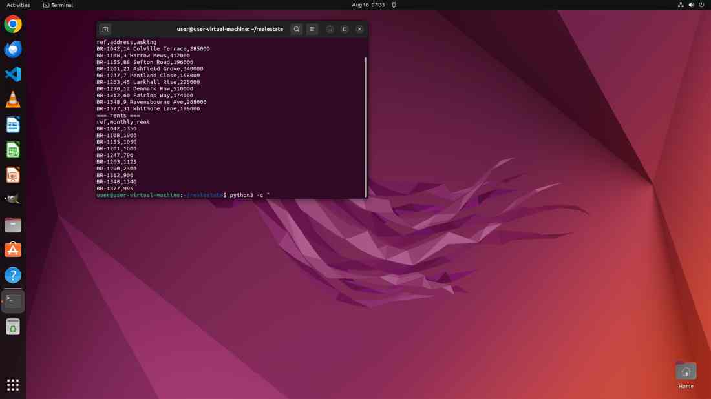
step 7.2 16:33:47
same model call as the previous action
EXECUTED (pyautogui in VM)pyautogui.press("enter")
step 7.3 16:33:52
same model call as the previous action
EXECUTED (pyautogui in VM)pyautogui.typewrite("import csv")
step 7.4 16:33:57
same model call as the previous action
EXECUTED (pyautogui in VM)pyautogui.press("enter")
step 7.5 16:34:02
same model call as the previous action
EXECUTED (pyautogui in VM)pyautogui.typewrite("listing={}")
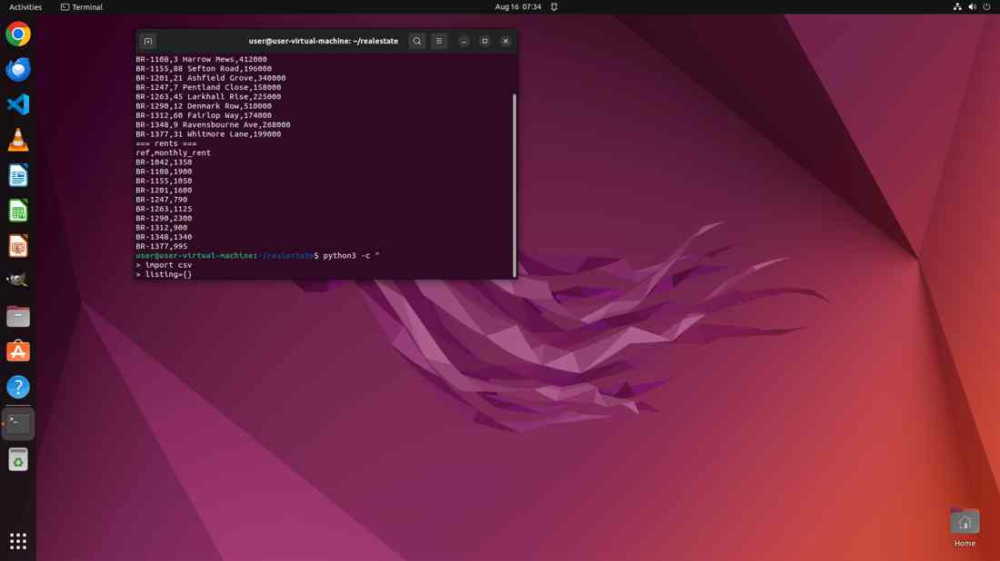
step 7.6 16:34:06
same model call as the previous action
EXECUTED (pyautogui in VM)pyautogui.press("enter")
step 7.7 16:34:11
same model call as the previous action
EXECUTED (pyautogui in VM)pyautogui.typewrite("with open('listings.csv') as f:")
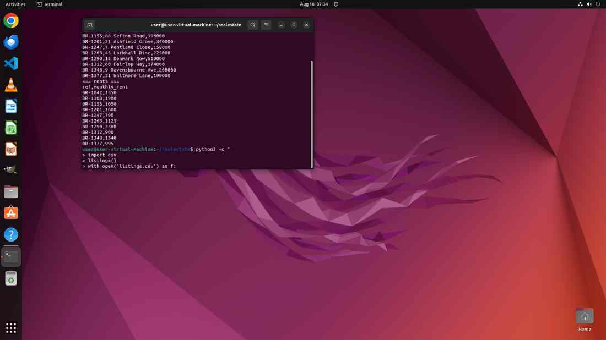
step 7.8 16:34:16
same model call as the previous action
EXECUTED (pyautogui in VM)pyautogui.press("enter")
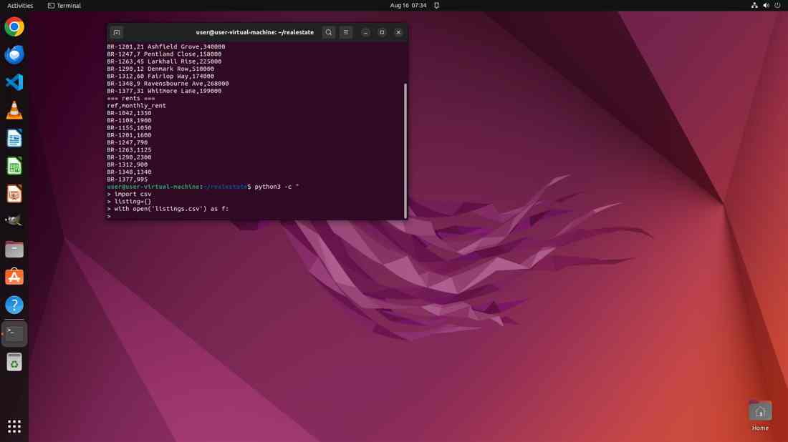
step 7.9 16:34:21
same model call as the previous action
EXECUTED (pyautogui in VM)pyautogui.typewrite(" for r in csv.DictReader(f):")
step 7.10 16:34:26
same model call as the previous action
EXECUTED (pyautogui in VM)pyautogui.press("enter")
step 7.11 16:34:30
same model call as the previous action
EXECUTED (pyautogui in VM)pyautogui.typewrite(" listing[r['ref'].strip()]=float(r['asking'])")
step 7.12 16:34:35
same model call as the previous action
EXECUTED (pyautogui in VM)pyautogui.press("enter")
step 7.13 16:34:40
same model call as the previous action
EXECUTED (pyautogui in VM)pyautogui.typewrite("rows=[]")
step 7.14 16:34:45
same model call as the previous action
EXECUTED (pyautogui in VM)pyautogui.press("enter")
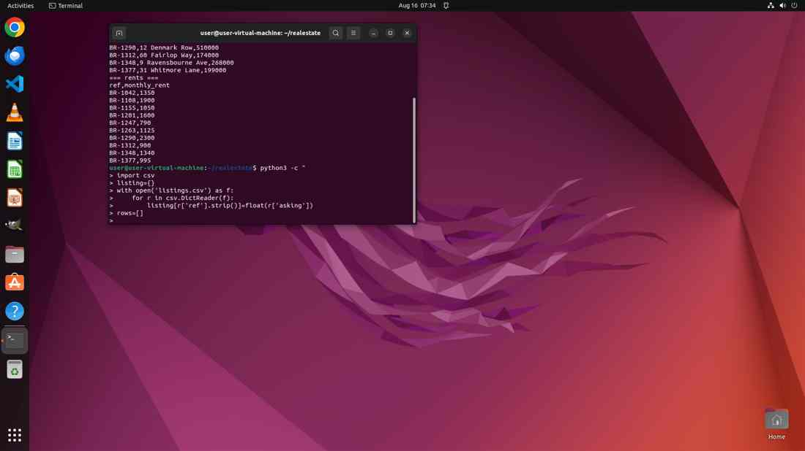
step 7.15 16:34:50
same model call as the previous action
EXECUTED (pyautogui in VM)pyautogui.typewrite("with open('rents.csv') as f:")
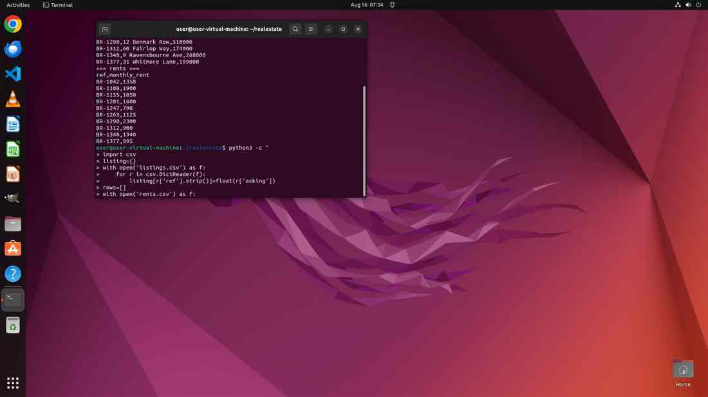
step 7.16 16:34:55
same model call as the previous action
EXECUTED (pyautogui in VM)pyautogui.press("enter")
step 7.17 16:34:59
same model call as the previous action
EXECUTED (pyautogui in VM)pyautogui.typewrite(" for r in csv.DictReader(f):")
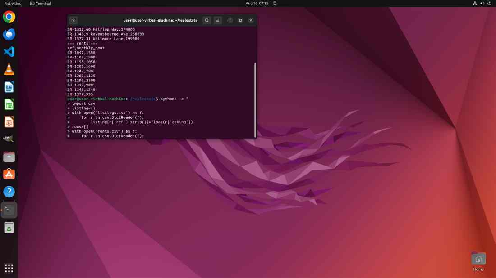
step 7.18 16:35:04
same model call as the previous action
EXECUTED (pyautogui in VM)pyautogui.press("enter")
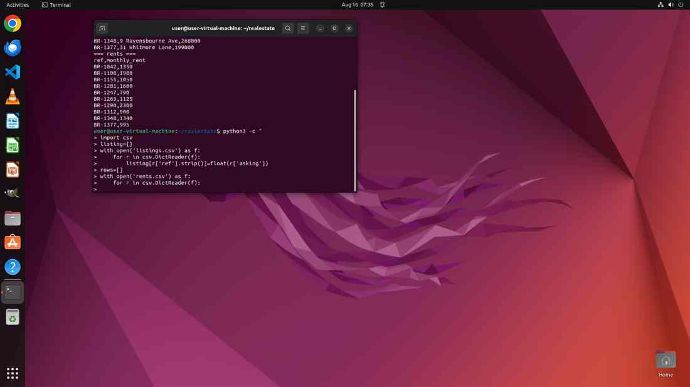
step 7.19 16:35:09
same model call as the previous action
EXECUTED (pyautogui in VM)pyautogui.typewrite(" ref=r['ref'].strip()")
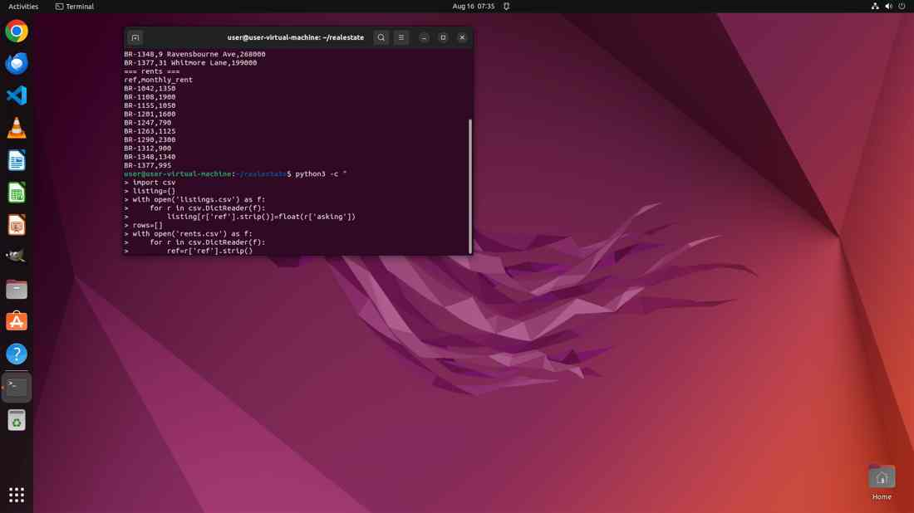
step 7.20 16:35:14
same model call as the previous action
EXECUTED (pyautogui in VM)pyautogui.press("enter")
step 7.21 16:35:18
same model call as the previous action
EXECUTED (pyautogui in VM)pyautogui.typewrite(" if ref in listing:")
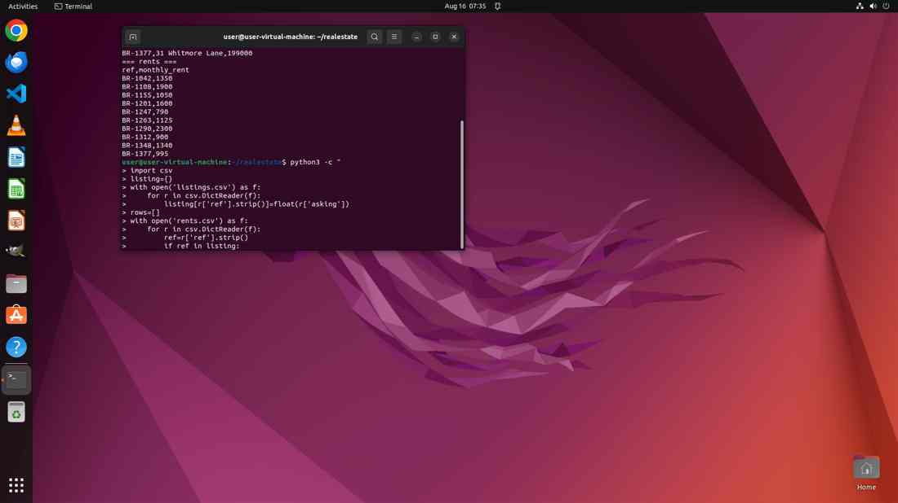
step 7.22 16:35:23
same model call as the previous action
EXECUTED (pyautogui in VM)pyautogui.press("enter")
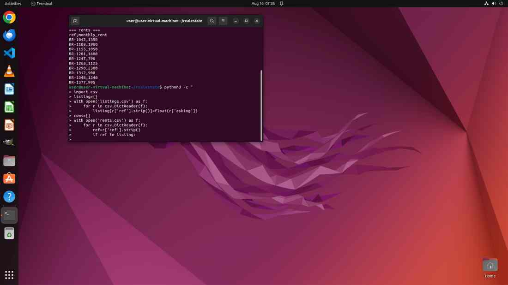
step 7.23 16:35:29
same model call as the previous action
EXECUTED (pyautogui in VM)pyautogui.typewrite(" annual=float(r['monthly_rent'])*12")
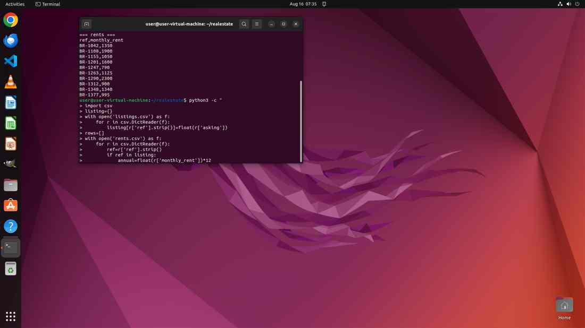
step 7.24 16:35:33
same model call as the previous action
EXECUTED (pyautogui in VM)pyautogui.press("enter")
step 7.25 16:35:38
same model call as the previous action
EXECUTED (pyautogui in VM)pyautogui.typewrite(" y=annual/listing[ref]*100")
step 7.26 16:35:43
same model call as the previous action
EXECUTED (pyautogui in VM)pyautogui.press("enter")
step 7.27 16:35:47
same model call as the previous action
EXECUTED (pyautogui in VM)pyautogui.typewrite(" if y>=6:")
step 7.28 16:35:52
same model call as the previous action
EXECUTED (pyautogui in VM)pyautogui.press("enter")
step 7.29 16:35:56
same model call as the previous action
EXECUTED (pyautogui in VM)pyautogui.typewrite(" rows.append((ref,y))")
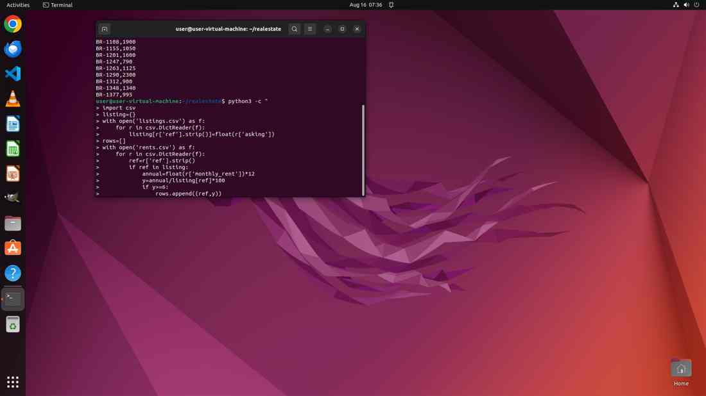
step 7.30 16:36:04
same model call as the previous action
EXECUTED (pyautogui in VM)pyautogui.press("enter")
step 7.31 16:36:09
same model call as the previous action
EXECUTED (pyautogui in VM)pyautogui.typewrite("rows.sort(key=lambda x:(-round(x[1],10),x[0]))")
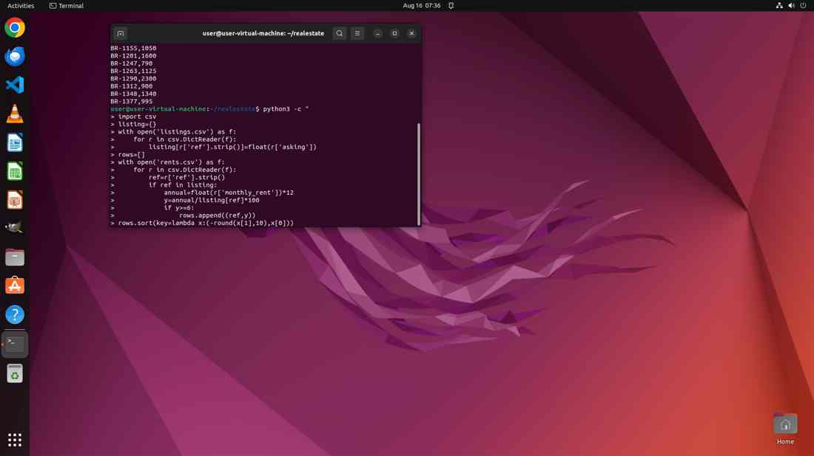
step 7.32 16:36:14
same model call as the previous action
EXECUTED (pyautogui in VM)pyautogui.press("enter")
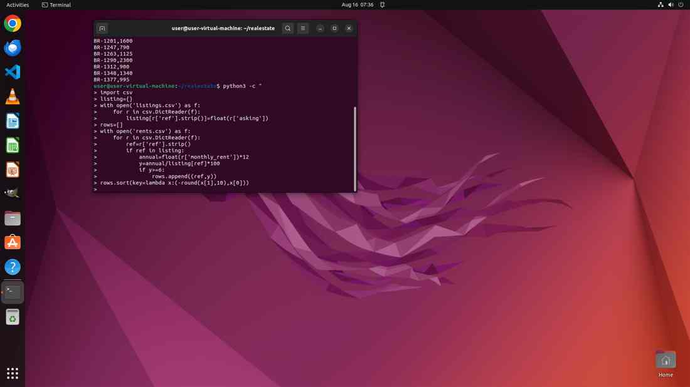
step 7.33 16:36:19
same model call as the previous action
EXECUTED (pyautogui in VM)pyautogui.typewrite("with open('shortlist.txt','w') as f:")
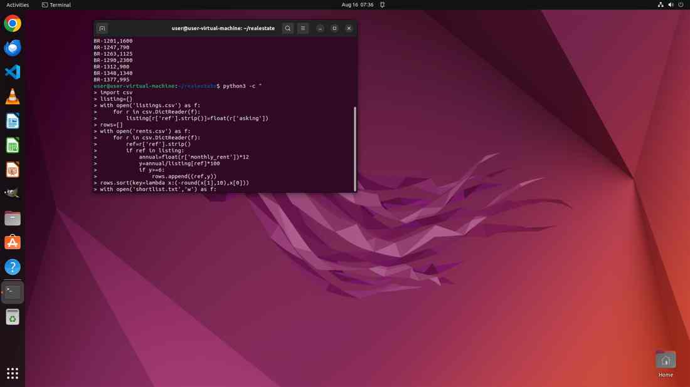
step 7.34 16:36:23
same model call as the previous action
EXECUTED (pyautogui in VM)pyautogui.press("enter")
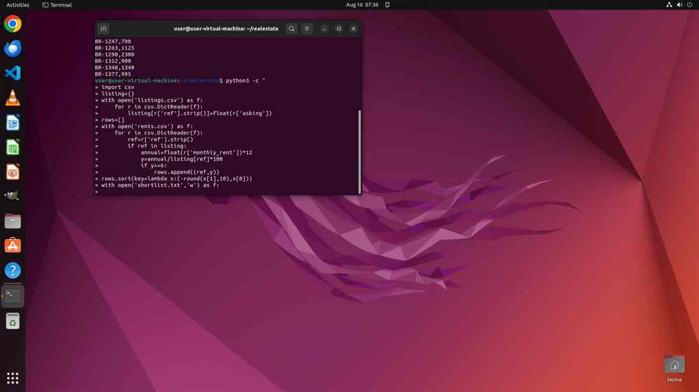
step 7.35 16:36:28
same model call as the previous action
EXECUTED (pyautogui in VM)pyautogui.typewrite(" for ref,y in rows:")
step 7.36 16:36:32
same model call as the previous action
EXECUTED (pyautogui in VM)pyautogui.press("enter")
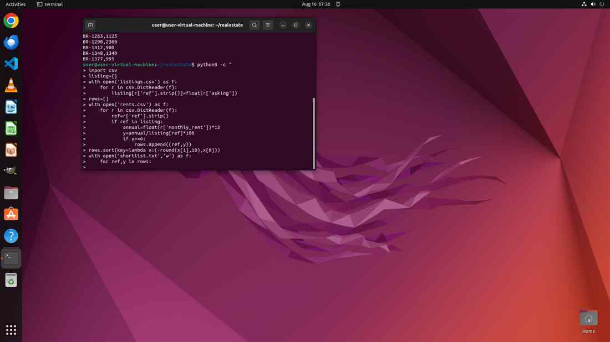
step 7.37 16:36:37
same model call as the previous action
EXECUTED (pyautogui in VM)pyautogui.typewrite(" f.write(f'{ref}={y:.1f}%\\n')")
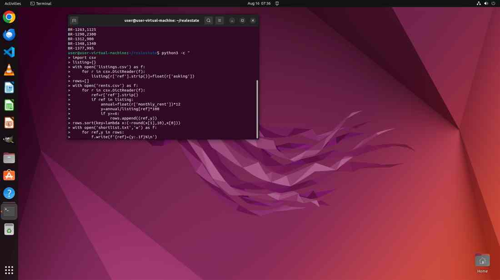
step 7.38 16:36:42
same model call as the previous action
EXECUTED (pyautogui in VM)pyautogui.press("enter")
step 7.39 16:36:47
same model call as the previous action
EXECUTED (pyautogui in VM)pyautogui.typewrite("print(open('shortlist.txt').read())")
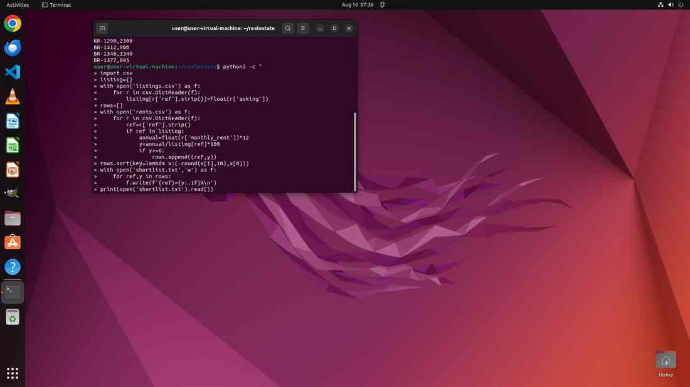
step 7.40 16:36:51
same model call as the previous action
EXECUTED (pyautogui in VM)pyautogui.press("enter")
step 7.41 16:36:56
same model call as the previous action
EXECUTED (pyautogui in VM)pyautogui.typewrite("\"")
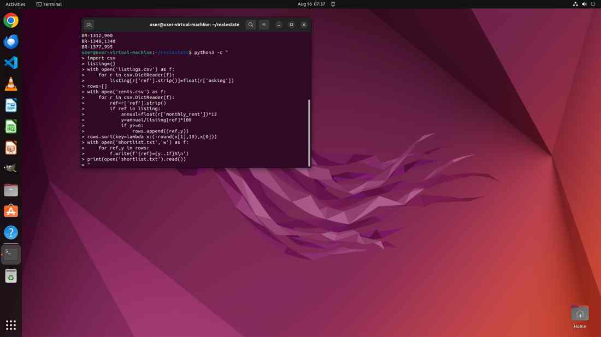
step 7.42 16:37:01
same model call as the previous action
EXECUTED (pyautogui in VM)pyautogui.press("enter")
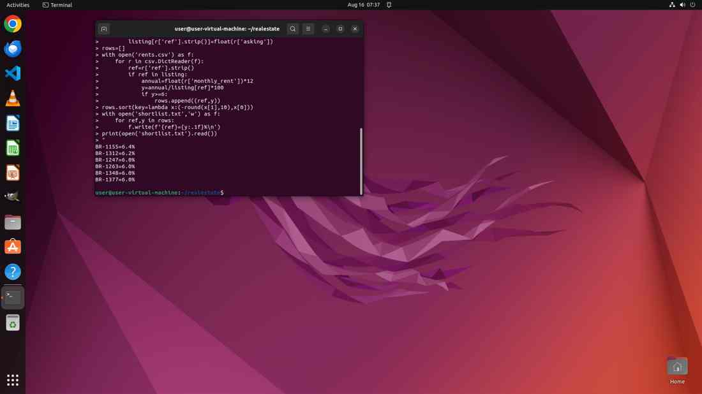
step 8 16:37:21
THINKINGThe output shows BR-1348=6.0% was included, which contradicts my manual calc (5.996%). Let me check: BR-1348 monthly 1340, annual 16080, asking 268000. 16080/268000 = 0.05999... let me recompute: 268000*0.06 = 16080. Yes exactly! So 16080/268000 = 0.06 exactly = 6.0%. I made an arithmetic error earlier (I used 5.996%). It's exactly 6.0%.
So BR-1348 is 6.0% and should be included. Good.
So the six qualifying refs, sorted:
- BR-1155=6.4%
- BR-1312=6.2%
- 6.0% ties: BR-1247, BR-1263, BR-1348, BR-1377 in A-Z order.
Output:
BR-1155=6.4%
BR-1312=6.2%
BR-1247=6.0%
BR-1263=6.0%
BR-1348=6.0%
BR-1377=6.0%
This matches the file output. The file shortlist.txt has been written in /home/user/realestate. The task is complete. Let me verify the file location is correct — yes, we're in ~/realestate and wrote shortlist.txt there.
Done.
ACTIONThe script ran successfully and wrote the file. Note that BR-1348 (16080 / 268000) is exactly 6.0%, so it correctly qualifies.
The `shortlist.txt` file has been created in `/home/user/realestate` with the qualifying refs (gross yield ≥ 6%), sorted highest yield first and ties broken alphabetically by ref:
```
BR-1155=6.4%
BR-1312=6.2%
BR-1247=6.0%
BR-1263=6.0%
BR-1348=6.0%
BR-1377=6.0%
```
The cross-check used the `ref` column to join the two files:
- **listings.csv** supplied the asking price per ref.
- **rents.csv** supplied the monthly rent (annualized ×12).
Six of the ten listings met the ≥ 6% threshold. The four at exactly 6.0% (BR-1247, BR-1263, BR-1348, BR-1377) are listed in A-Z order, following the higher-yield BR-1312 (6.2%) and BR-1155 (6.4%).
TOOL CALL<tool_call>
<function=computer_use>
<parameter=action>
call_user
</parameter>
<parameter=text>
I need additional information from the user to proceed.
</parameter>
</function>
</tool_call>